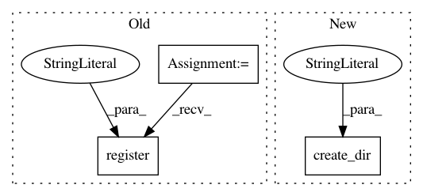

570690f2974a698afee90026f4275da375cb5d4e,contrib/go/tests/python/pants_test/contrib/go/tasks/test_go_buildgen.py,GoBuildgenTest,test_multiple_remote_roots_failure,#GoBuildgenTest#,76
Before Change
task.execute()
def test_multiple_remote_roots_failure(self):
SourceRoot.register("3rdparty/go", GoRemoteLibrary)
SourceRoot.register("src/go", GoLibrary, GoRemoteLibrary)
context = self.context(target_roots=[self.make_target("src/go/fred", GoLibrary)])
task = self.create_task(context)
with self.assertRaises(task.InvalidRemoteRootsError):
After Change
def test_multiple_remote_roots_failure(self):
self.create_dir("3rdparty/go")
self.create_dir("src/go")
self.create_dir("src/go_remote")
context = self.context(target_roots=[self.make_target("src/go/fred", GoLibrary)])
task = self.create_task(context)
with self.assertRaises(task.InvalidRemoteRootsError):
task.execute()
In pattern: SUPERPATTERN
Frequency: 3
Non-data size: 3
Instances
Project Name: pantsbuild/pants
Commit Name: 570690f2974a698afee90026f4275da375cb5d4e
Time: 2015-10-19
Author: benjyw@gmail.com
File Name: contrib/go/tests/python/pants_test/contrib/go/tasks/test_go_buildgen.py
Class Name: GoBuildgenTest
Method Name: test_multiple_remote_roots_failure
Project Name: pantsbuild/pants
Commit Name: 570690f2974a698afee90026f4275da375cb5d4e
Time: 2015-10-19
Author: benjyw@gmail.com
File Name: contrib/go/tests/python/pants_test/contrib/go/tasks/test_go_buildgen.py
Class Name: GoBuildgenTest
Method Name: test_unrooted_failure
Project Name: pantsbuild/pants
Commit Name: 570690f2974a698afee90026f4275da375cb5d4e
Time: 2015-10-19
Author: benjyw@gmail.com
File Name: contrib/go/tests/python/pants_test/contrib/go/tasks/test_go_buildgen.py
Class Name: GoBuildgenTest
Method Name: test_multiple_local_roots_failure